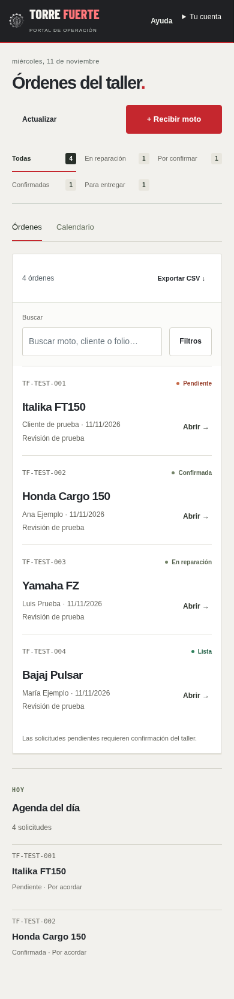
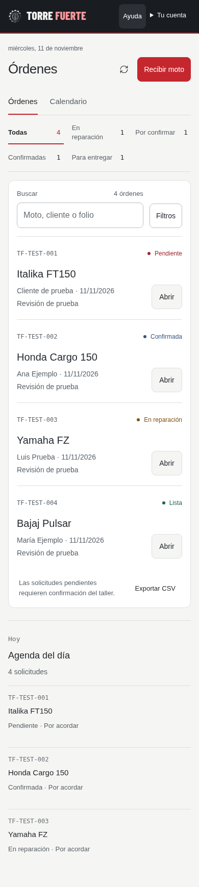

Torre Fuerte OPS · Antes y después
Capturas reales del navegador con expedientes ficticios. Elige una pantalla y pulsa una imagen para verla a tamaño completo. Para trabajar con las órdenes, abre el portal del taller.




Leer auditoría, pruebas y límites · Ver nota con concepto de prueba